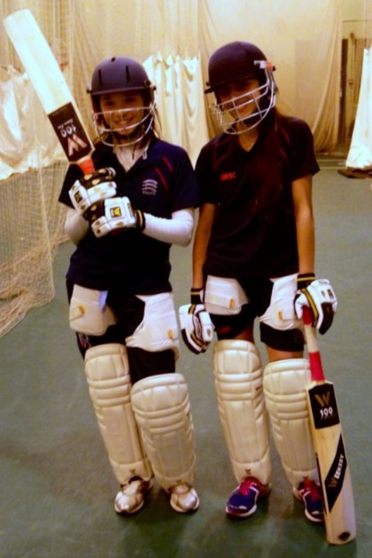
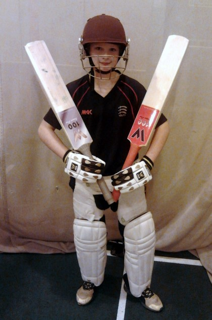
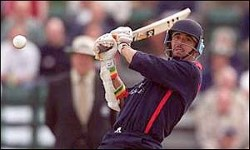

Who is using Weekesy 100 gear?
Mubasher Hassan
Mubasher was the joint winner of the CricketAM Shot at the Pro's competition in 2012. He uses the Paul Weekes Cricket Weekesy 100 Range.
Millie Pope and Gayatri Gole
Millie and Gayatri both represent Middlesex under 15's and are both part of the England Performance Programme. They both use the Paul Weekes Cricket Weekesy 100 Range.
Henry Rashke
Henry has been playing for Middlesex under 11's and uses the Paul Weekes Cricket Weekesy 100 Range. Here he is with his two favourite bats.


What they are saying:
I generally find bats too heavy, but when you buy a lighter bat, it has no middle. Weekesy's bats are great as they have a nice light pickup but still hit the ball powerfully!
Lucy Horitz - Ladies Cricketer
Weekesy's W100 Future Pro bat is definitely the best bat I have ever owned.
07727 214 097
info@paulweekescricket.co.uk